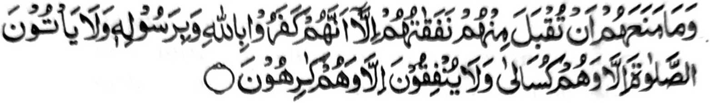

“Na da a miyakagandawali kiran ko katarima-a kiran ko ipephamemegay ran a rowar sa mata-an! a siran na da iran paratiyaya-a so Allah a go so Sogo Iyan, go diran ipenggolalan so Sambayang o di siran khibobokel, go di siran phamemegay o di siran magogowad.” (Surah At-Taubah: 54)
THANODAN: Giyangkanan a manga Ayaat a I taman sa V na aya pimbanding iran na so manga tao a bininasa iran so Sambayang. Salakao si-i na giyangka-iya kha-aloy na maka-aantap ko manga tao a biyantog o Allah sabap ko kapiya o Sambayang iran.